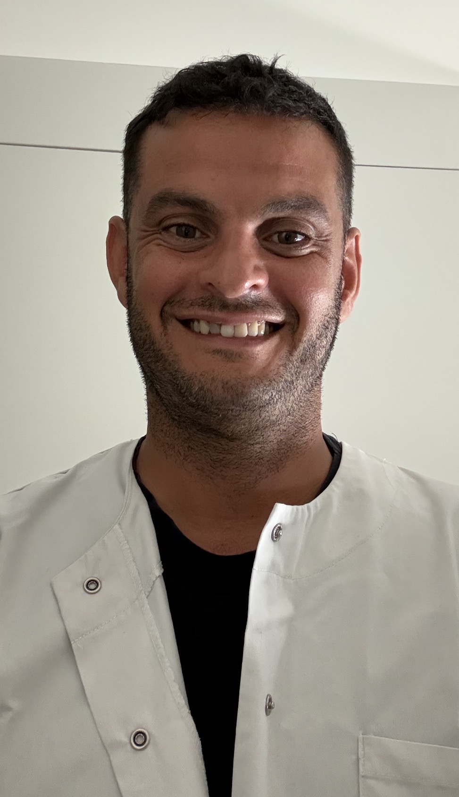

Soins infirmiers à domicile et au cabinet
Anglet • Bayonne • Biarritz
Alexandre Douarche, infirmier diplômé d'État, assure des soins infirmiers à domicile et au cabinet sur Anglet, Bayonne et Biarritz.
Conventionné, il intervient sur rendez-vous pour tous types de soins prescrits : pansements, injections, prises de sang, perfusions, soins post-opératoires et suivi des patients.
Alexandre Douarche est infirmier diplômé d'État. Il accompagne ses patients à domicile et au cabinet avec professionnalisme, écoute et bienveillance.
Il réalise les prises de sang, pansements, injections, perfusions, soins techniques et le suivi des traitements sur prescription médicale.
Déplacements à domicile sur l'ensemble du BAB et des communes voisines, sur rendez-vous.
Alexandre Douarche
Infirmier Diplômé d'État
Alexandre Douarche
Infirmier Diplômé d'État
RPPS : 10103392808
ADELI : 646276907
N° Ordinal : 3074095
Conventionné Assurance Maladie • Carte Vitale acceptée
📍 37 avenue d'Espagne
Résidence La Cotonnière – Bâtiment A
64600 Anglet
📞 06 86 19 60 83